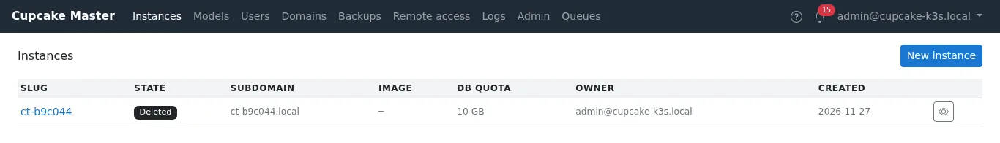
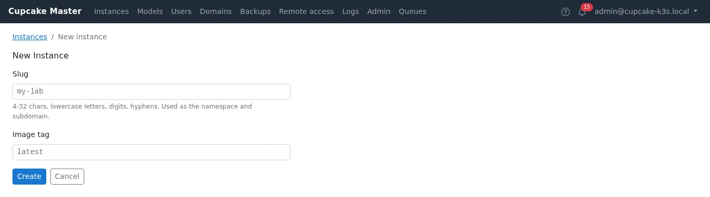
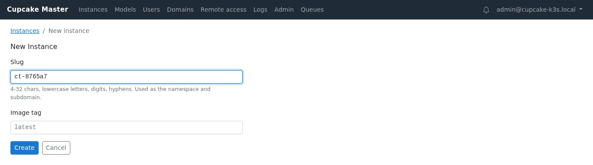
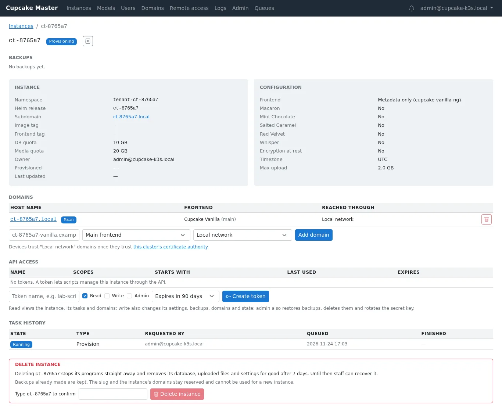
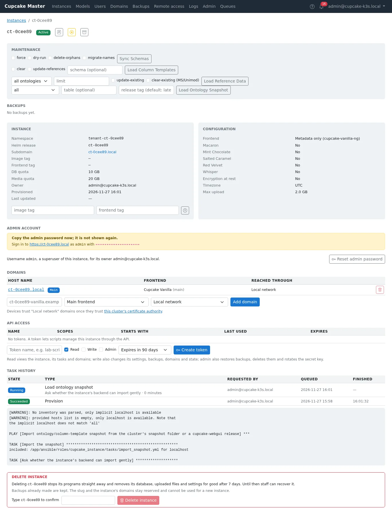

Creating an instance
- Choose New instance on the Instances page.

- Enter a slug: 4 to 32 lower-case letters, digits and hyphens. It names the instance's address, for example
lab1becomeshttps://lab1.localon a Pi cluster. Leave the image tag empty for the current release.

- Choose Create. The instance's page opens and its provisioning starts.

While it runs, the task history shows the step it is on and how long it has been running, and the log below follows it live.

- Once it is active, the instance answers at the address under Domains.

On a Raspberry Pi the instance is usually active after about 5 minutes. Its ontologies and column templates are then imported from the cluster's reference snapshot as a task of its own, while the instance can already be used.
The admin account
Provisioning creates a superuser in the new instance for its owner. The username is the part of the owner's email address before the @. The owner sees the password once, at the top of the Admin account section of the instance's page, the first time they open it after provisioning; copy it then.
If the password is lost, Reset admin password on the same page sets a new one, again shown once to the owner. Staff can reset it too, but only the owner sees the new password.
The instance's page
The page shows the instance's state and actions, its admin account, domains, API access, backups, configuration and task history. Staff also see maintenance tasks such as loading reference data.
Each instance's own logs are under the Logs button at the top of its page.